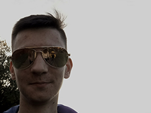

|  | АрнольдычРост модели: 1,99 м
Вес модели: 25 г
Глаза: как у пабитай сабаки
Цвет волос: пятнистый (как долматинец)
Порода: борзая
О модели: когда захожу в блок говорят макс пшёл вон. Забываю где моя миска (говорят у собак короткая память). Моя главная цель в жизнь - вес 30 г (паэтаму жру гэйнер мисками). К лотку не приучен, гладкошёрстный (ошейник в подарок).
p.s. Выгуляйте миня пажалуста ктота |